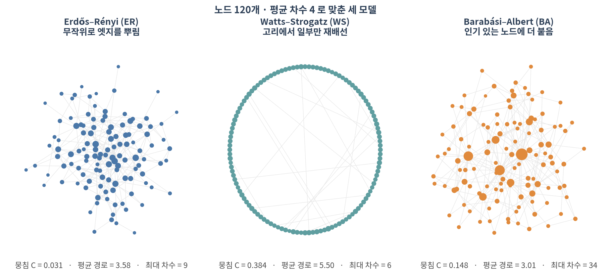
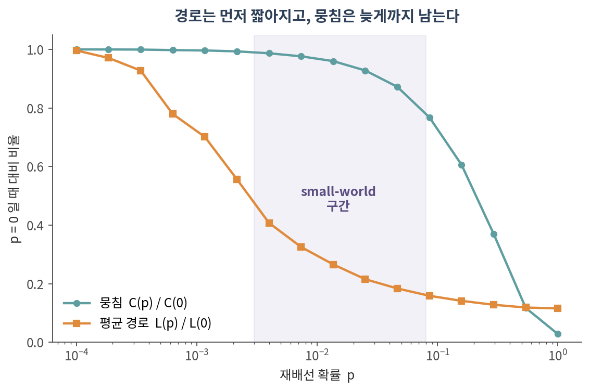
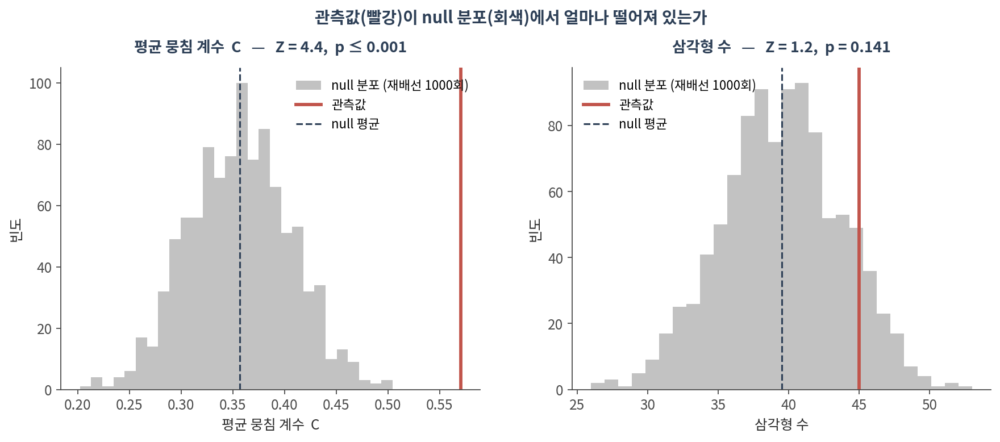
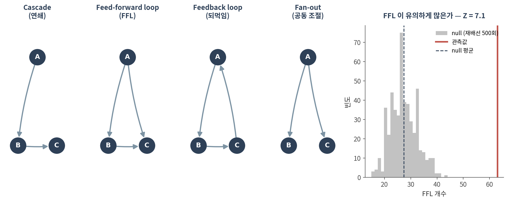

04. 랜덤 그래프와 null model
이 챕터를 마치면 다음을 할 수 있습니다.
- ER·WS·BA 세 모델이 각각 무엇을 재현하고 무엇을 못 하는지 말할 수 있다
- ⚠️ 왜 네트워크 지표를 단독으로 보고하면 안 되는지 설명할 수 있다
- 차수 보존 재배선으로 null 분포를 만들고 Z-score와 경험적 p-value를 계산할 수 있다
- ⚠️ 같은 네트워크에서 지표를 바꾸면 결론이 뒤집힐 수 있음을 예로 들 수 있다
- 모티프의 정의가 왜 null model에 의존하는지, FFL이 무엇인지 말할 수 있다
🤔 생각해볼 질문
내 PPI 네트워크의 뭉침 계수가 0.57로 나왔습니다. 큰 값인가요?
1. 세 가지 생성 모델 🎲
1) 무엇을 만드는 모델인가

| 모델 | 만드는 규칙 | 뭉침 C | 평균 경로 | 최대 차수 |
|---|---|---|---|---|
| Erdős–Rényi (ER) | 모든 쌍에 같은 확률로 엣지 | 0.031 | 3.58 | 9 |
| Watts–Strogatz (WS) | 고리에서 확률 p로 재배선 | 0.384 | 5.50 | 6 |
| Barabási–Albert (BA) | 차수에 비례해 새 엣지가 붙음 | 0.148 | 3.01 | 34 |
- ER — 가장 단순한 비교 기준. 경로는 짧지만 ⚠️ 뭉침이 거의 없습니다. 실제 생물학 네트워크와 가장 다른 지점
- WS — 뭉침을 살리면서 경로를 줄이는 방법. small-world의 설명 모델
- BA — 허브를 만드는 방법. 새 노드가 이미 인기 있는 노드에 붙는다는 가정(preferential attachment)
⚠️ 어느 모델도 실제 네트워크의 모든 성질을 재현하지 못합니다. 이들은 “실제 네트워크가 이렇게 생겼다”가 아니라 “이 한 가지 규칙만으로 이만큼 설명된다”는 사고 실험입니다.
2) Small-world가 생기는 구간

- p를 조금만 올려도 평균 경로는 급격히 짧아지는데, 뭉침은 거의 그대로입니다
- p = 0.004에서 경로는 41%로 줄지만 뭉침은 99%가 남아 있습니다
- 💡 지름길 몇 개만 있으면 세계가 좁아진다 — 이것이 small-world의 정체입니다
⚠️ 그러니 “우리 네트워크는 small-world다”는 그 자체로 발견이 아닙니다. 웬만한 sparse 네트워크는 다 그렇습니다. 말하려면 null 대비 얼마나 그런지를 보여야 합니다.
2. ⚠️ Null model이 핵심이다
1) 관측값 하나로는 아무 말도 할 수 없다
앞 질문으로 돌아갑니다. 뭉침 계수 0.57은 큰 값일까요?
- 비교 대상이 없으면 답이 없습니다
- “ER 모델보다 크다”는 비교는 너무 약합니다 — ER은 뭉침이 거의 0이라 거의 모든 실제 네트워크가 이깁니다
- ✅ 제대로 된 비교는 내 네트워크와 차수 분포가 똑같은 가짜 네트워크입니다
2) 차수 보존 재배선
Degree-preserving rewiring — 엣지 두 개를 골라 양끝을 맞바꿉니다.
(A–B), (C–D) → (A–D), (C–B)- 각 노드의 차수는 그대로, 연결의 짜임만 무작위가 됩니다
- 이것을 수만 번 반복하면 “차수 분포는 같지만 나머지는 우연인” 네트워크 하나
- 그 과정을 1,000번 반복해 지표를 다시 재면 null 분포를 얻습니다
\[Z = \frac{\text{관측값} - \text{null 평균}}{\text{null 표준편차}}\]
- 경험적 p-value = (null이 관측값 이상인 횟수 + 1) / (반복 수 + 1)
- ⚠️ 재배선 N회로 낼 수 있는 가장 작은 p는 1/(N+1)입니다. 1,000회면 p ≤ 0.001까지밖에 못 갑니다
3) ⚠️ 지표를 바꾸면 결론이 뒤집힌다

| 지표 | 관측 | null 평균 ± 표준편차 | Z | p |
|---|---|---|---|---|
| 평균 뭉침 계수 C | 0.571 | 0.357 ± 0.049 | 4.4 | ≤ 0.001 |
| 삼각형 수 | 45 | 39.5 ± 4.4 | 1.2 | 0.141 |
- ⚠️ “뭉침이 유의하게 높다”와 “삼각형이 유의하게 많지 않다”가 동시에 참입니다
- 왜? 평균 뭉침 계수는 노드마다 한 표씩 주므로 차수가 작은 노드의 영향이 큽니다. 삼각형 총수는 허브가 지배합니다
- → 이 네트워크에서 특별한 것은 “삼각형이 많다”가 아니라 “차수가 작은 노드들이 촘촘히 뭉쳐 있다”입니다
✅ 교훈: 어떤 지표를 골랐는지가 곧 결론입니다. 논문에는 지표 이름과 null model 종류, 반복 횟수를 모두 적으세요.
- ❌ ER을 null로 쓰기 — 차수 분포를 보존하지 않으므로 “허브가 있다”는 당연한 결과만 재확인합니다
- ❌ 재배선 횟수가 모자람 — 엣지 수의 10배 이상 섞어야 원래 구조가 충분히 지워집니다.
nswap=10*m정도부터 - ❌ null을 100번만 만들고 p < 0.01 이라고 쓰기 — 100회로는 p ≤ 0.01이 한계입니다
💡 그리고 무엇을 보존할지는 질문에 따라 달라집니다. 차수만 보존할 수도 있고, 차수 + 커뮤니티 구조를 함께 보존해야 할 때도 있습니다. 보존하는 것이 많을수록 보수적인 검정이 됩니다.
3. 모티프와 그 유의성 🔺
1) 부분구조, 모티프, graphlet
- 부분구조(subgraph) — 네트워크 안의 작은 연결 패턴. 그냥 세면 됩니다
- 모티프(motif) — 그중 null보다 유의하게 자주 나타나는 것. 정의부터가 §2에 의존합니다
- Graphlet / GDV — 모티프를 노드 단위로 확장한 것. “이 노드는 어떤 모양들 속에 몇 번 등장하는가”
⚠️ 그래서 “이 네트워크에는 삼각형 모티프가 있다”는 말은 성립하지 않습니다. 삼각형은 부분구조이고, 모티프가 되려면 검정을 통과해야 합니다.
2) 방향 그래프의 3-노드 패턴

| 패턴 | 생물학적 의미 |
|---|---|
| Cascade | 단순 연쇄 전달 |
| Feed-forward loop (FFL) | 잡음 여과, 신호 지연 — 전사조절에서 가장 많이 연구된 패턴 |
| Feedback loop | 되먹임. 🔗 02 §3.3의 SCC가 바로 이것 |
| Fan-out | 한 조절자가 여러 표적을 동시에 조절 |
- 심어둔 FFL 25개 → 관측 63개, null 평균 27.4 ± 5.0, Z = 7.1
- ⚠️ 방향 그래프의 null은 in-degree와 out-degree를 모두 보존해야 합니다 (
nx.directed_edge_swap) - ⚠️ 관측값(63)이 심은 개수(25)보다 큰 이유 — 무작위 엣지가 우연히 만든 FFL이 섞여 있습니다. 그래서 null 비교가 필요합니다
3) Structural role vs community
- Community(커뮤니티) = 어디에 속해 있는가 — 가까운 노드끼리 묶음 (05에서 다룸)
- Structural role(구조적 역할) = 어떤 모양을 하고 있는가 — 멀리 떨어져 있어도 같은 역할일 수 있음
💡 예: 서로 다른 경로에 있는 두 전사인자가 각각 자기 모듈에서 fan-out 허브 노릇을 한다면, 커뮤니티는 다르지만 역할은 같습니다. graphlet degree vector로 이런 유사성을 잽니다.
Colab에서 실행합니다. 설치는 90. Colab 환경 설정 참고.
import numpy as np, pandas as pd, networkx as nx
import matplotlib.pyplot as plt
G = nx.karate_club_graph() # 자기 네트워크로 바꿔도 그대로 돌아갑니다
G = G.subgraph(max(nx.connected_components(G), key=len)).copy()
m = G.number_of_edges()
# ── 1. 재고 싶은 지표를 함수로 정의 ──────────────────────────────────
metrics = {
"avg_clustering": nx.average_clustering,
"transitivity": nx.transitivity,
"triangles": lambda g: sum(nx.triangles(g).values()) // 3,
"assortativity": nx.degree_assortativity_coefficient,
"avg_path": nx.average_shortest_path_length,
}
obs = {k: f(G) for k, f in metrics.items()}
# ── 2. 차수 보존 재배선으로 null 분포 만들기 ─────────────────────────
N = 1000 # ⚠️ p ≤ 1/(N+1) 까지만 말할 수 있습니다
rng = np.random.default_rng(0)
null = {k: [] for k in metrics}
for i in range(N):
H = G.copy()
nx.double_edge_swap(H, nswap=10 * m, max_tries=200 * m,
seed=int(rng.integers(1e9)))
H = H.subgraph(max(nx.connected_components(H), key=len)).copy()
for k, f in metrics.items():
null[k].append(f(H))
# ── 3. Z-score 와 경험적 p ───────────────────────────────────────────
rows = []
for k in metrics:
v = np.array(null[k])
z = (obs[k] - v.mean()) / v.std(ddof=1)
p_hi = (np.sum(v >= obs[k]) + 1) / (N + 1) # 관측값이 큰 쪽
p_lo = (np.sum(v <= obs[k]) + 1) / (N + 1) # 작은 쪽
rows.append({"metric": k, "observed": round(obs[k], 4),
"null_mean": round(v.mean(), 4),
"null_sd": round(v.std(ddof=1), 4),
"Z": round(z, 2), "p": round(min(p_hi, p_lo) * 2, 4)})
pd.DataFrame(rows)
# ── 4. 방향 그래프라면 (전사조절 등) ─────────────────────────────────
# nx.directed_edge_swap(H, nswap=5*m, max_tries=200*m) # in/out 차수 모두 보존확인할 것:
- ⚠️ 지표마다 Z가 얼마나 다른가 — 하나가 유의하다고 다른 것도 유의하지 않습니다
- ⚠️
double_edge_swap은 연결성을 보장하지 않습니다. 재배선 후 거대 요소를 다시 잡는 줄이 들어 있는 이유입니다 - 재배선 횟수를
1*m,10*m,50*m으로 바꿔가며 null 평균이 안정되는 지점 찾기 - ✅ 이 표를 논문 supplement에 그대로 넣을 수 있습니다
📝 요약
- ER·WS·BA는 실제 네트워크의 초상화가 아니라 한 가지 규칙의 사고 실험입니다
- ER은 뭉침이 거의 없고, WS는 뭉침을 살리며, BA는 허브를 만듭니다 — 어느 것도 전부를 재현하지 못합니다
- ⚠️ small-world는 웬만한 sparse 네트워크가 다 만족합니다. 그 자체로는 발견이 아닙니다
- ✅ 표준 null은 차수 보존 재배선입니다. ER을 null로 쓰면 당연한 결과만 재확인합니다
- Z-score = (관측 − null 평균) / null 표준편차, 경험적 p의 하한은 1/(N+1)
- ⚠️ karate club에서 평균 뭉침 계수는 Z=4.4로 유의하지만 삼각형 수는 Z=1.2로 유의하지 않습니다 — 지표 선택이 곧 결론
- 모티프는 “자주 나오는 패턴”이 아니라 “null보다 유의하게 자주 나오는 패턴”입니다
- ⚠️ 방향 그래프의 null은 in-degree와 out-degree를 모두 보존해야 합니다
- 커뮤니티(위치)와 structural role(역할)은 다른 개념입니다
➕ 더 읽을거리
생성 모델
Erdős P, Rényi A. On random graphs I. Publ Math Debrecen. 1959.
Watts DJ, Strogatz SH. Collective dynamics of ‘small-world’ networks. Nature. 1998.
Barabási AL, Albert R. Emergence of scaling in random networks. Science. 1999.
Null model과 모티프
Maslov S, Sneppen K. Specificity and stability in topology of protein networks. Science. 2002. (차수 보존 재배선을 생물학 네트워크에 도입)
Milo R, Shen-Orr S, Itzkovitz S, Kashtan N, Chklovskii D, Alon U. Network motifs: simple building blocks of complex networks. Science. 2002.
Mangan S, Alon U. Structure and function of the feed-forward loop network motif. PNAS. 2003.